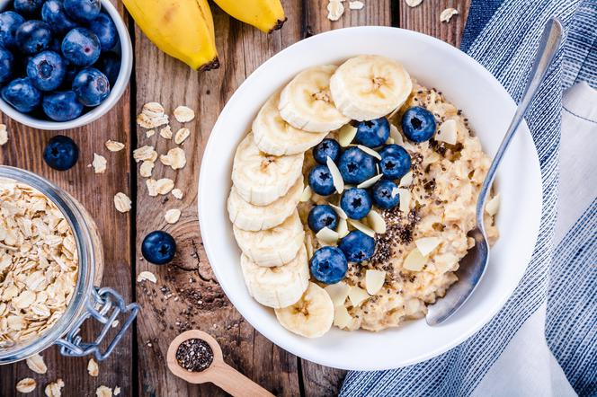

Oatmeal

Description
Hearty and quick breakfast dish. Try the recipe for warm oatmeal with banana and almonds, which is not only delicious but also very nutritious. Here's how to prepare it.
Ingredients
- 1 cup of milk (2% fat)
- 3 tablespoons of oatmeal
- 1 small banana
- 5 almonds
Steps
- Bring the milk to a boil, add the oatmeal and cook over low heat for a few minutes
- Transfer the cooked oatmeal to a bowl
- Place banana slices and chopped almonds on top